A first-person ASMR sim about washing filthy rugs clean, on a real simulation of water, foam and mud.
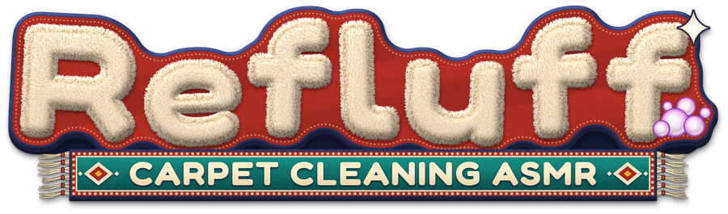
Press kit for Refluff: Carpet Cleaning ASMR
A first-person ASMR sim about washing filthy rugs clean, on a real simulation of water, foam and mud.
Out on 27 November 2026, on Steam for Windows PC. Wishlist it now.
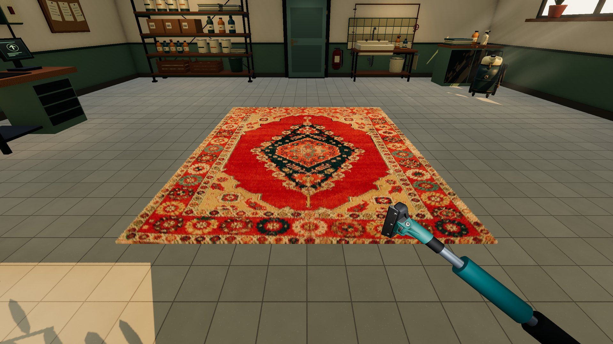
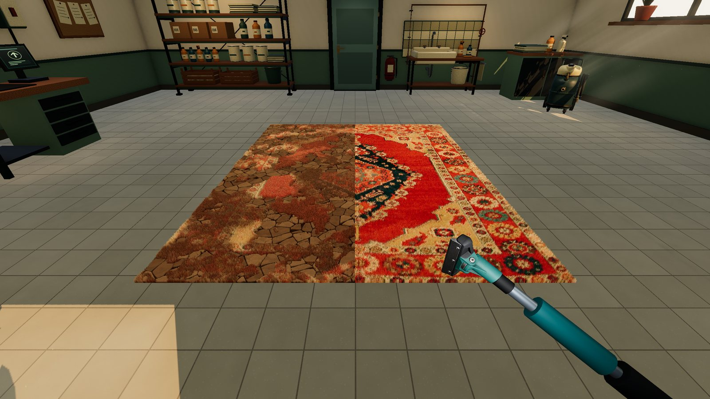
Fact sheet
- Game
- Refluff: Carpet Cleaning ASMR
- Developer and publisher
- Vahov Games
- Release date
- 27 November 2026
- Platform
- Windows PC, on Steam
- Price
- Announced at launch
- Genre
- First-person cleaning sim, cozy, ASMR
- Players
- Single player
- Controls
- Mouse and keyboard
- Languages
- Interface in 31 languages
- Age rating
- Suitable for all ages
- Needs
- A DirectX 12 graphics card (GTX 1060 6 GB or RX 580 8 GB and up)
- Contact and keys
- vahovgames@gmail.com
For creators
Record it, stream it, monetize it
You may publish videos and streams of Refluff on any platform, with or without commentary, and earn money from them. You do not need to ask: this kit is the permission.
No embargo
Post whenever you like, before or after the release on 27 November 2026.
Nothing to mute
The game has no music. Its sounds are real recordings under CC0, CC BY and Mixkit licences, credited in the game and on its Steam page. We do not register any game audio with Content ID or a similar system.
Keys
Write to vahovgames@gmail.com with a link to your channel. Keys go out one by one in private messages; none is in this kit.
Say what you think
A key never obliges you to post, or to be kind. If you received one for free, disclose it the way your platform and your local rules ask.
Use anything in this kit
The logos, key art, screenshots, trailer and footage are here to be used in coverage of the game: videos, thumbnails, articles, posts. Please keep the full title, Refluff: Carpet Cleaning ASMR, and link the Steam page.
About the game
One line
Short
Refluff is a first-person ASMR sim about running your own rug-washing workshop. Scrape, soak, foam, scrub and squeegee filthy carpets clean on a real fluid simulation. Get paid for every percent, upgrade your tools, take on bigger, dirtier rugs.
Long
Refluff is a calm first-person game about running your own rug-washing workshop. A filthy rug lands on the tiles, and you walk around it with the tool in your hand and do the job the way a carpet cleaner does: scrape off the dried crust, vacuum the dust, soak the pile, foam it, scrub the foam in with a rotary brush, squeegee the slurry onto the floor, pull the water out and dry the pile until it stands up again.
Nothing here is a picture being wiped away. Water soaks in and wicks through the fibres, dry dust turns to mud the moment it gets wet, foam heaps up and slowly settles, and whatever you push off the rug ends up on the floor tiles, where a detergent sprayer and a mop are waiting.
Every percent you clean pays on the spot. Spend it at the upgrade bench on stronger and wider tools, or on bigger, dirtier rugs that pay more. There are twelve rugs, from museum carpets to cartoon designs and a ring with a hole in the middle.
It is made for headphones. Every machine is a recording of a real one: motors spool up and wind down, the vacuum tube rattles the moment it swallows a crumb, water hisses, foam fizzes, bristles drag. There is no music, no timer, no enemies and no way to fail.
Features
- First person: walk around the rug with the tool in your hand
- A real-time fluid simulation of water, foam, mud and dried crust
- 10 tools: eight for the carpet, plus a detergent sprayer and a mop for the floor
- 12 rugs: museum carpets, cartoon designs, a round rug and a ring
- Paid for every cleaned percent; POWER and AREA upgrades for every tool; bigger, dirtier rugs to order
- Two inspection lamps that show the dirt and the damp your eyes miss
- Every machine sound is a recording of a real machine, and there is no music
- No enemies, no fail state, no timer running out: clean at your own pace
- A built-in learning guide that teaches every tool
- Single player, mouse and keyboard, interface in 31 languages
Trailer
Download the trailer MP4, 1080p60, 122 MB
Cover image 1920 × 1080
One minute of gameplay with captions. No music: the sound is the game's own.

Gameplay footage
Every clip is recorded gameplay at normal speed through the game's own first-person camera, 60 frames a second. In the clean b-roll the HUD is switched off for editing; the sound is the game's own, with no music, voice, captions or logo added. The vertical clips are 9:16 windows cut from the same 1440p capture. Three clips have a silent track and are marked so.
Clean b-roll, no HUD
For your own edit: nothing on screen but the game.
With the HUD
What a player sees: meters, wallet, tool belt, the shop and the summary card.
Vertical, 9:16
For Shorts, Reels and TikTok. The first one is a ready 20-second edit.
Screenshots
Twelve frames at 2560 × 1440, taken through the game camera. A click opens the full file.
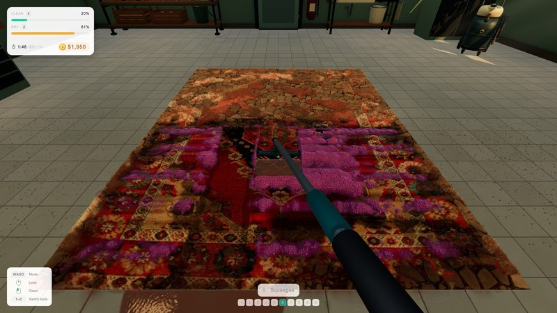
A squeegee pulls lanes through pink foam and the clean pattern shows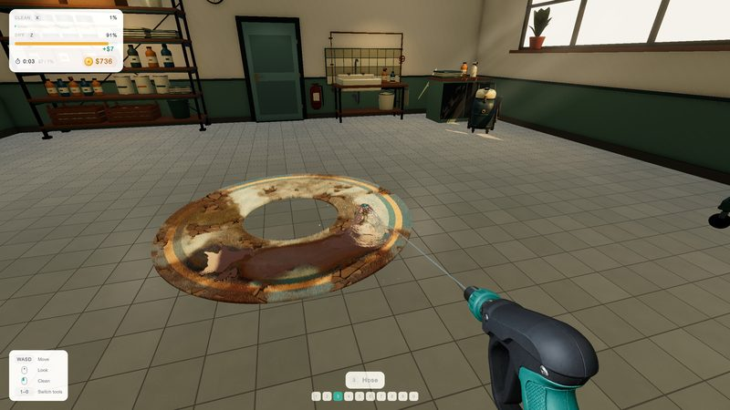
The hose soaks a ring-shaped rug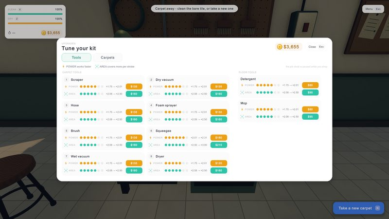
The upgrade shop: POWER and AREA for ten tools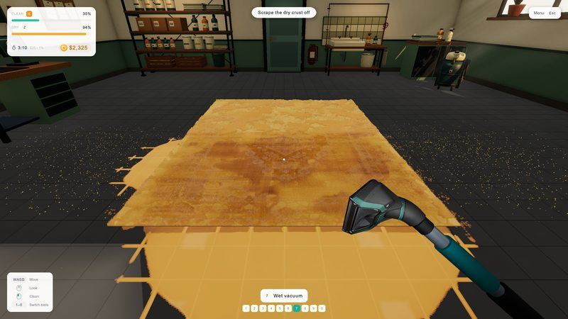
The dirt lamp: what is still soiled glows amber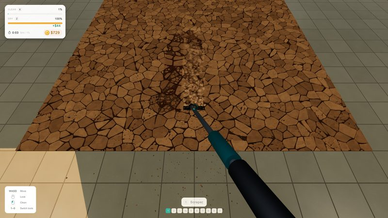
The scraper breaks a lane through dried mud crust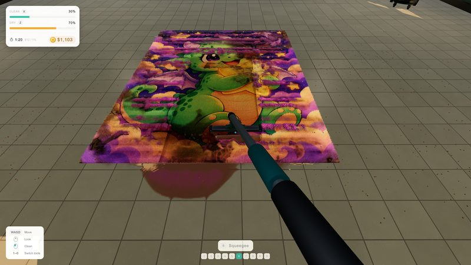
A cartoon dragon rug under the squeegee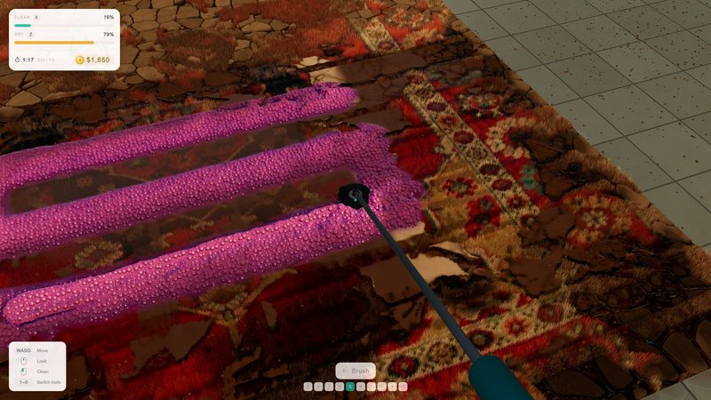
The rotary brush scrubs rows of foam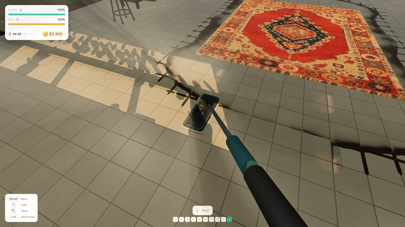
The mop wipes dried runoff off the tiles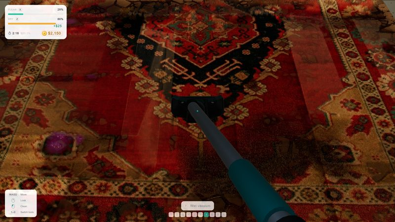
The wet vacuum brings the colours back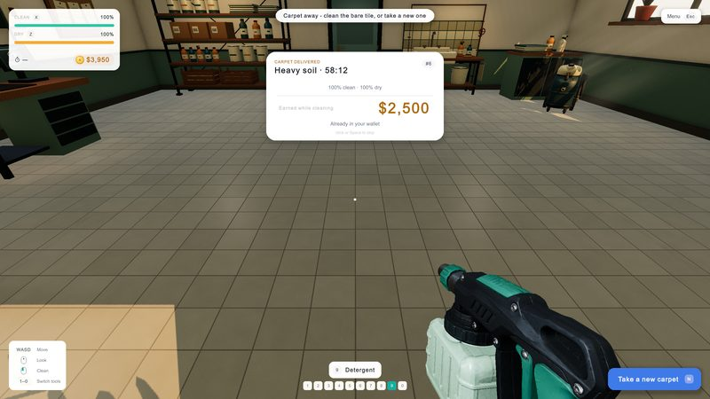
Hand-over: the rug is delivered, the job is summed up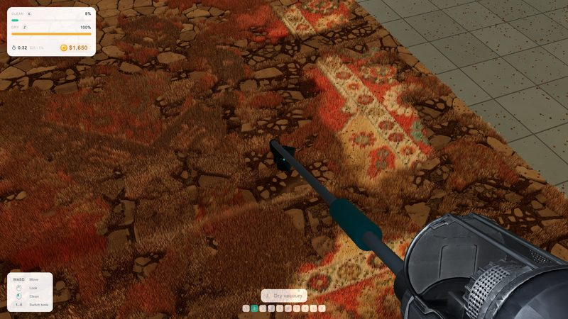
The dry vacuum draws a clean lane through dust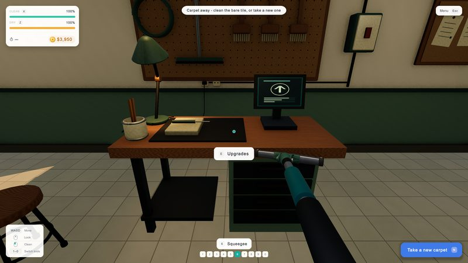
The upgrade bench in the workshop
Logos, key art and thumbnail plates
The logos are transparent PNGs with their own outline, so they sit on light and dark pictures alike.
Before you record
- Capture the game's sound clean and listen on headphones: the sound is half the game.
- Hold the right mouse button for a 2x close view. Small tool heads read far better on video that way.
- X switches on the dirt lamp and Z the moisture lamp. The room goes dark and whatever is left on the rug glows: a ready-made reveal.
- The first rugs are small and only dusty, on purpose. For heavy crust and mud, buy Carpet dirt and Carpet size at the upgrade bench (Carpets tab). They apply to the next rug, and R brings a new rug at once.
- The dirty slurry leaves the rug with water. If a rug will not reach 100 %, flood it with the hose and squeegee it again: the wet vacuum alone will not take the last of it.
- F1 opens the learning guide. Hide guidance in it takes the lesson card out of your footage.
- Menu, then Language, switches between the 31 languages while the game runs.
Controls
| W A S D or arrows | Walk |
| Shift | Walk faster |
| Mouse | Look around |
| Left mouse button | Use the tool |
| Right mouse button, held | 2x close view |
| 1 to 9, 0 or the wheel | Pick a tool |
| E | Open the upgrades at the bench |
| X / Z | Dirt lamp / moisture lamp |
| H | Hand over the clean rug |
| R | Take a new rug |
| F1 | Learning guide |
| Esc | Menu: volume, language, credits |
The ten tools, in working order
| 1 | Scraper: breaks the dried crust |
| 2 | Dry vacuum: picks up dust and crumbs |
| 3 | Hose: soaks the pile and rinses it |
| 4 | Foam sprayer: lays down pink cleaning foam |
| 5 | Brush: a rotary machine that scrubs the foam in |
| 6 | Squeegee: pushes the dirty water off the rug |
| 7 | Wet vacuum: pulls the water out of the pile |
| 8 | Dryer: dries the pile until it stands up |
| 9 | Detergent: loosens dried dirt on the floor tiles |
| 0 | Mop: wipes the tiles clean |
What is in the kit
| Folder | Inside | Size |
|---|---|---|
| 01_Factsheet_and_Copy | Fact sheet, descriptions, the guide for creators, sound credits: plain text | 14 KB |
| 02_Trailer | The one-minute trailer and its cover image | 124 MB |
| 03_Gameplay_Broll_Clean | 20 clips without HUD, captions or logo, for your own edit: 1920 x 1080, 60 fps | 209 MB |
| 04_Gameplay_With_HUD | 7 clips with the game's HUD, shop and summary card: 1920 x 1080, 60 fps | 50 MB |
| 05_Vertical_9x16 | A 20-second clean edit and 6 tool clips in 9:16: 1080 x 1920, 60 fps | 112 MB |
| 06_Screenshots | 12 screenshots: 2560 x 1440 | 17 MB |
| 07_Logos_and_Icon | Logo, wordmark and icon as transparent PNG | 7.3 MB |
| 08_Key_Art_and_Thumbnails | Key art with and without the logo, before / after plates for thumbnails | 19 MB |
Small print
How AI was used
As stated on the Steam page: some 3D models in this game, the cleaning tool heads, were created with an AI 3D model generation tool and then edited by hand. Everything else was made without generative AI: the simulation and code, the sound effects (real recordings), the carpet photographs and all store page artwork. No content is generated by AI while you play.
Sound credits
If you reuse the game's sound on its own, outside a video of the game, these credits go with it.
Sound effects from Freesound.org, cut and levelled for this game: "bissell_carpet_cleaner_vacuum_01.wav" by joedeshon (https://freesound.org/s/79236/), licensed under CC BY 4.0 "loud metal fan turned on and off a few times (machine starting up)" by busabx (https://freesound.org/s/726634/), licensed under CC BY 4.0 "Floor Buffer Sound" by prometheus888 (https://freesound.org/s/864976/), licensed under CC BY 4.0 "shovelling scraping water" by adda_records (https://freesound.org/s/519974/), licensed under CC BY 4.0 "26_Fregona_Agua.mp3" by byronabadia (https://freesound.org/s/444946/), licensed under CC BY 4.0 "Whipped Cream Spray Can" by kev_durr (https://freesound.org/s/321055/), licensed under CC BY 4.0 "BerberCarpetScratching.wav" by akent (https://freesound.org/s/178499/), licensed under CC BY 3.0 "Vacuum Cleaner, On Idle Off, Close, A.wav" by InspectorJ (www.jshaw.co.uk, https://freesound.org/s/430632/), licensed under CC BY 4.0 "Coins 2" by DominikBraun (https://freesound.org/s/483507/), licensed under CC BY 4.0 (pitch and gain varied during playback) Licences: https://creativecommons.org/licenses/by/4.0/ and https://creativecommons.org/licenses/by/3.0/ Additional sounds: Mixkit (mixkit.co) and Freesound users kyles, richwise, RossJuterbock, crcavol, yehdawgo (CC0).
System requirements
Minimum. Windows 10 64-bit (1909 or later), Intel Core i5-8400 or AMD Ryzen 5 2600, 8 GB RAM, DirectX 12 graphics card with compute shader support and 4 GB VRAM (GeForce GTX 1060 6 GB or Radeon RX 580 8 GB), 2 GB of storage.
Recommended. Windows 11 64-bit, Intel Core i7-10750H or AMD Ryzen 7 5800X, 16 GB RAM, GeForce RTX 3060 or Radeon RX 6600 XT, 2 GB of storage: 1440p at 60+ fps.
All 31 languages
English, Arabic, Bulgarian, Chinese (Simplified), Chinese (Traditional), Czech, Danish, Dutch, Finnish, French, German, Greek, Hungarian, Indonesian, Italian, Japanese, Korean, Malay, Norwegian, Polish, Portuguese (Brazil), Portuguese (Portugal), Romanian, Russian, Spanish (Spain), Spanish (Latin America), Swedish, Thai, Turkish, Ukrainian, Vietnamese